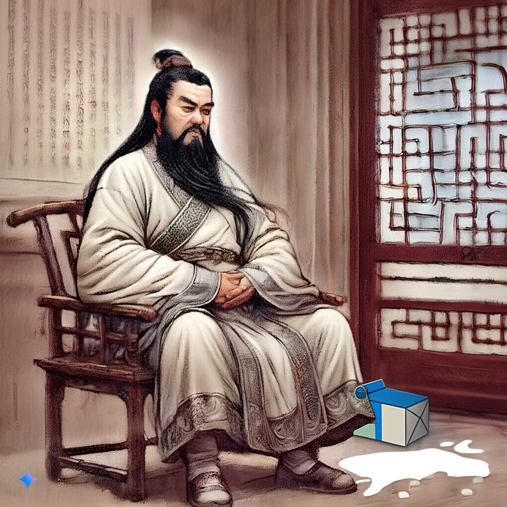
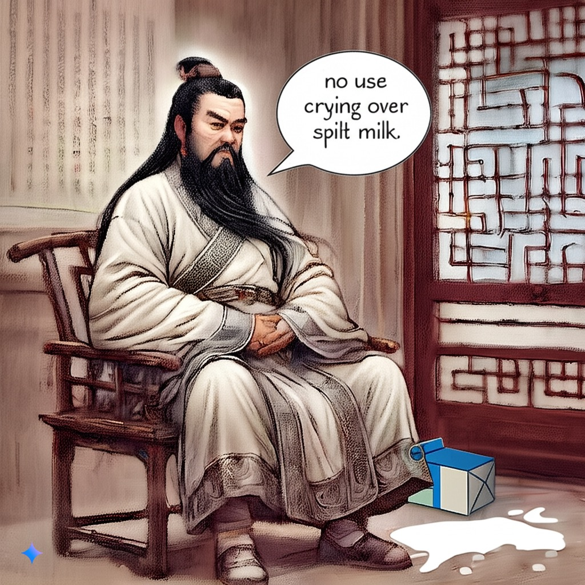

古代智慧的回響
Echoes of Ancient Wisdom


❮
❯
Silent Wisdom
In ancient halls where wisdom dwells,
A spilled cup whispers life's own spells,
Through time, we learn what silence tells.
智慧居於古老殿堂，
溢出的杯子訴說生命的咒語，
歲月流轉，我們學會聆聽寂靜。
真理